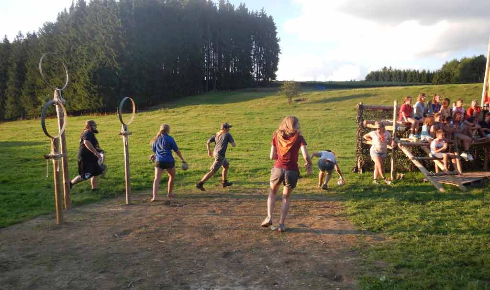

Zwerkbal in het echte leven
Wist je dat zwerkbal in het echt spelen ook mogelijk is? Hier word uitgelegd hoe je in het echte leven zwerkbal kan spelen.
Zwerkbal in het echt en zijn alternatieve benodigdheden.
- In het spel gebruikt men drie verschilende soorten ballen
- 1 Slurk(De quaffle) is een voor 80% opgeblazen volleybal. Hij wordt gebruikt om punten te scoren in de ringen van het andere team.
- 3 Beukers (De bludgers) zijn 80% opgeblazen trefballen. Ze worden gebruikt om spelers te raken om hun een time-out te geven. Aangezien er maar 2 beaters zijn per team heeft één van de teams dus altijd twee beukers. Dit wordt bludger supremacy of BS genoemd.
- 1 Snaai (De snitch) is een tennisbal in een gele sok, die wordt vastgemaakt aan de broek van de snaai runner, een onpartijdig persoon die rondloopt binnen de aangeduide zone en die de seekers moet verhinderen de snaai te pakken te krijgen.
- Tijdens het spel zijn er 4 verschillende schijdsrechters die elk hun eigen taak hebben.
- De Head Ref volgt het algemeen spelverloop. Hij grijpt in bij fouten, en neemt de meeste beslissingen.
- De Snitch Ref volgt de snitch runner en de seekers kijkt of zij illegale handelingen maken. Ook oordeelt hij of een snitch catch goedgekeurd wordt.
- De Assistent Ref let op contact en beats; Diegene bekijkt of de bludgers die gegooid worden de spelers raken en of er legaal contact tussen de spelers plaatsvindt. Zij kunnen "Beat" uitroepen als een speler geraakt is en hun vuist in de lucht houden voor de Head ref als er een contact overtreding gemaakt is.
- De Goal Ref kijkt of de quaffle legaal door de ringen is gegaan bij een doelpunt.
- Zwerkbal is een contactsport waarin men legaal mag tackelen, welliswaar onder strihte richtlijnen namelijk
- Er mag enkel getackeld worden tussen de schouders en de knieën.
- Men mag enkel een speler van dezelfde categorie tackelen. (Een keeper wordt als chaser aanzien).
- Er mag niet van achter getackeld worden.
- Spelers
- De chasers (jagers; 3) zijn de spelers die de doelpunten maken. Zij gooien de quaffle naar elkaar en proberen te scoren in een van de 3 ringen van de tegenstanders.
- De beaters (drijvers; 2) hanteren de bludgers en gooien die naar andere spelers om hun een tijdelijke time-out uit het spel te bezorgen.
- De keeper (wachter; 1) is de bewaker van de ringen. Hij mag zich ook in het spel mengen, dan wordt hij een vierde chaser. Binnenin zijn Keeperzone is hij immuun voor beukers.
- De seeker (zoeker; 1) moet de snitch zien te vinden. Hij houdt zich niet bezig met de rest van het spel. Wanneer hij de snitch grijpt, is het spel afgelopen.
Van zodra er een fout wordt begaan legt de scheidsrechter het spel stil. Dan moeten alle spelers stoppen met lopen en hun bezems op de grond leggen. De scheidsrechter kan waarschuwingskaarten uitdelen. Als er een 'milde' fout wordt begaan, kan de speler een gele kaart krijgen. Dit betekent 1 minuut straftijd naast het veld, tenzij er eerder een doelpunt wordt gemaakt. Een dubbele gele kaart betekent 2 minuten op de strafbank en automatisch rood. Een zwaardere fout wordt afgestraft met een rode kaart. Verbaal geweld tegen de scheidsrechter wordt onmiddellijk bestraft met rood. Anders dan in andere sporten is dat de speler die van het veld wordt gestuurd, onmiddellijk vervangen wordt, zij het dat de vervanger pas na twee minuten speeltijd mag invallen.
Het spel
- Verloop van het spel
- 6 Spelers die beginnen van beide teams (de 'starting line-up) moeten bij het begin van het spel op een rij voor hun doel knielen. Als beide teams klaar zijn roept de hoofdscheidsrechter Brooms up!. Dit is het teken dat de spelers naar de ballen mogen rennen, die op de middenlijn van het veld liggen.
- Na 17 minuten komt de snitch het veld op en 1 minuut later worden de seekers erop losgelaten. Dit betekent dat er nu 7 spelers van elk team in het veld staan. Zodra de snitch is gevangen is de wedstrijd afgelopen.
- Puntentelling
- Elke keer als er een doelpunt gescoord wordt door één van de chasers (de quaffle wordt door één van de ringen gegooid), telt dit als 10 punten voor het team. Als de snitch gevangen wordt, bezorgt dit 30 punten. Een snitchcatch wil met andere woorden niet zeggen dat dat team wint.
